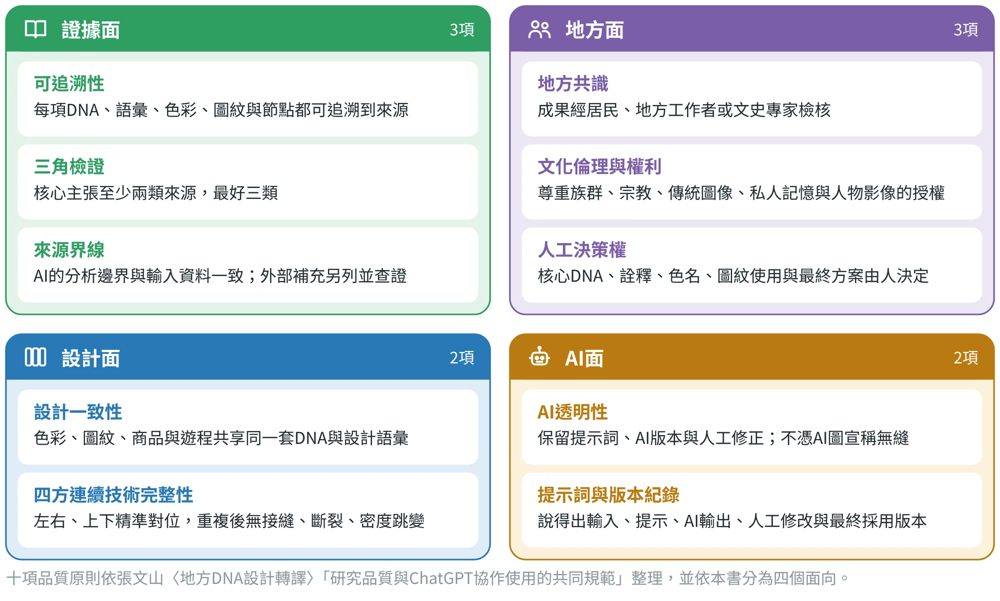
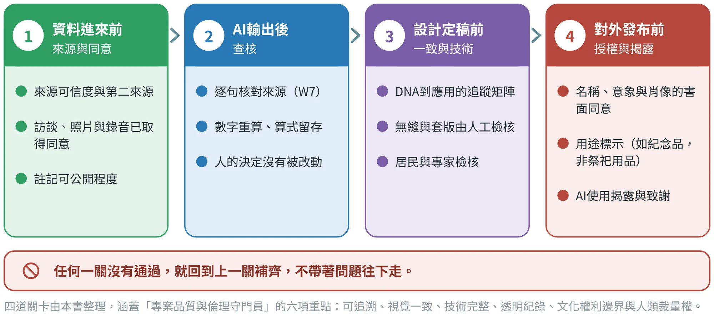
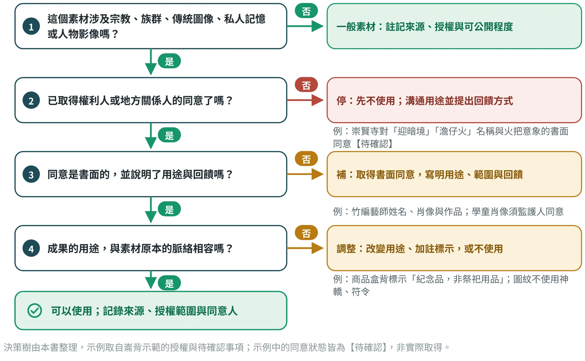
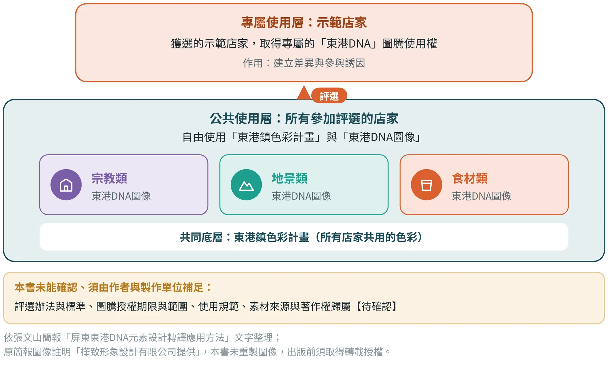

品質、倫理與文化權利
把「可靠、尊重、可驗證」寫成十項原則與四道關卡，讓設計對得起地方

15.1十項品質原則#
前面幾章分別談了證據、轉譯、驗證與人機協作；本章把它們收攏成一份共同的規範。十項原則取自作者〈研究品質與ChatGPT協作使用的共同規範〉，本書依它們在專案中的作用，分成四個面向（圖15.1、表15.1）：證據面管資料可不可靠，地方面管地方認不認，設計面管成果一不一致，AI面管協作透不透明。

| 面向 | 原則 | 判準 | 建議操作 |
|---|---|---|---|
| 證據面 | 可追溯性 | 每項DNA、語彙、色彩、圖紋與遊程節點，都可回溯到資料來源 | 成果表加上「來源／受訪者／地點／日期／照片編號」欄 |
| 證據面 | 三角檢證 | 不讓單一受訪者或單一網路資料決定地方特色 | 至少交叉使用文獻、田野、訪談、影像中的兩類；核心主張最好三類 |
| 證據面 | 來源界線 | AI的分析邊界與輸入資料一致，不把模型的一般知識混入地方事實 | 提示詞寫明「只依據我提供的資料」；外部資訊另列「外部補充」，由研究者查證 |
| 地方面 | 地方共識 | 成果經居民、地方工作者或文史專家檢核 | 5點量表加開放意見：像不像這個地方、是否適切、是否願意使用或推薦 |
| 地方面 | 文化倫理與權利 | 涉及族群、宗教、傳統圖像、私人記憶與人物影像時，尊重授權與文化敏感性 | 註記資料授權、影像同意、圖像來源與可公開程度；敏感內容先與地方關係人確認 |
| 地方面 | 人工決策權 | 核心DNA、文化詮釋、色名、圖紋使用、圖紋組織規則與最終方案，不由AI單獨決定 | 由學生或研究者判斷，並以居民、專家或使用者的驗證作為最終依據 |
| 設計面 | 設計一致性 | 色彩、圖紋、商品與遊程共享同一套DNA與設計語彙 | 建立「DNA→文化語彙→設計語彙→色彩／圖紋→四方連續樣式圖→應用」追蹤矩陣 |
| 設計面 | 四方連續技術完整性 | 左右、上下邊界精準對位，重複後無接縫、斷裂與密度跳變；組織形式與尺度規則清楚 | 保存向量圖磚與尺寸；完成3×3與5×5預覽；檢查四邊形狀、座標、線寬與色彩；做包裝紙、手提袋、布料套版測試 |
| AI面 | AI透明性 | AI可用於摘要、聚類、命名、組合發散與情境模擬，但不取代地方證據，也不能單憑AI圖像宣稱已無縫 | 保留主要提示詞、AI版本與人工向量修正紀錄；以實際圖磚與重複預覽驗證 |
| AI面 | 提示詞與版本紀錄 | 協作過程可重現：說得出輸入、提示、AI輸出、人工修改與最終採用版本 | 保留提示詞、日期與版本、重要輸出與人工修正摘要，放進附錄或專案歷程 |
十項原則的文字依作者〈研究品質與ChatGPT協作使用的共同規範〉整理；「面向」為本書的歸類，原文未分組。
這十項不是十張要逐張打勾的清單，而是專案進行中的十個提醒。小組可以在每個階段結束時各抽幾項自檢：這一階段做了什麼，哪幾項最容易出問題？答案通常集中在「來源沒寫清楚」與「同意沒問過」兩處。
15.2四道關卡：在對的時間點檢查#
原則要變成習慣，需要固定的檢查點。本書在專案流程中設四道關卡（圖15.2），分別守住「資料進來前」「AI輸出後」「設計定稿前」與「對外發布前」。四道關卡整理自作者簡報中「專案品質與倫理守門員」的六項重點：可追溯、視覺一致、技術完整、透明紀錄、文化權利邊界與人類裁量權。

每一道關卡都對應到一份工具與一位簽認者（表15.2）。簽認的意思是：這個人看過了、認為這一關可以過，並留下日期。簽認不是形式，它讓小組在被問到「這個是誰確認的」時，有一個確定的答案。
| 關卡 | 檢查什麼 | 用哪份工具 | 誰簽認 |
|---|---|---|---|
| 1 資料進來前 | 來源可信度與第二來源；訪談、照片、錄音已取得同意；註記可公開程度 | 範本01、02與證據矩陣 | 小組；指導老師抽查 |
| 2 AI輸出後 | 逐句核對來源（W7）；數字重算並留下算式；人的決定沒有被改動 | 範本11、12與W7 | 小組；指導老師抽查 |
| 3 設計定稿前 | DNA到應用的追蹤矩陣完整；無縫與套版由人工檢核；居民與專家檢核過 | 範本13、14與追蹤矩陣 | 小組；居民或專家 |
| 4 對外發布前 | 名稱、意象與肖像的書面同意；用途標示；AI使用揭露與致謝 | 權利與授權清單（表15.4） | 權利人或單位；指導老師 |
範本編號對應附錄A的十四份工具範本；各關卡的工具為本書建議的搭配，可依專案調整。
四道關卡有一個共同的規則：任何一關沒有通過，就回到上一關補齊，不帶著問題往下走。 一個沒有來源的句子，到了第三關就更難找回來源；一個沒有取得同意的名稱，印上包裝之後再補同意，往往已經無法挽回。越早發現，改的成本越低。
15.3文化倫理決策樹#
地方的素材裡，有一些特別需要小心：宗教、族群、傳統圖像、私人記憶與人物影像。它們不是不能用，而是要先問清楚「誰有權決定」。圖15.3把判斷拆成四個問題，從上往下問，哪一個回答「否」，就走向右邊對應的處理。

決策樹的重點有三個：
- 同意要在使用之前取得。 「先做出來，再去問」把對方放在不好拒絕的位置，也讓設計有被迫修改的風險。
- 同意要寫下來，並說清楚用途、範圍與回饋。 口頭的「可以啊」很快就模糊；寫明用在哪裡、用多久、如何標示與回饋，雙方才有共同的依據。
- 用途要與素材的脈絡相容。 同樣的圖像，放在紀念品上和放在祭祀用品上，意義完全不同。必要時改變用途、加上標示，或乾脆不用。
倫理的實例：六個素材，六種不同的問題
決策樹（本節前面）問的是「誰有權決定」。九個驗證案例裡，有六個素材正好落在這個問題上（表15.3）。它們的共同點是：每一個都很容易變成設計——光影、插畫、導覽、色票——卻也都是文件裡沒有寫同意與授權的素材。
| 案例 | 素材 | 倫理問題（文件裡看得到的） | 本書的建議 |
|---|---|---|---|
| 土庫 | 順天宮「川龍饗宴」5G AR互動光雕秀（辦桌迎媽祖） | 廟宇與神明形象投影在建築與市場上，是宗教場域的光影使用；簡報未載是否演出，也未載同意狀態〔土2〕 | 先確認廟方與信眾的書面同意與使用界線；用途要與祭儀脈絡相容待確認 |
| 北港 | 朝天宮建築與繞境影像、藝閣 | 神像與繞境影像的使用界線，文件未見；光影節以合作方式舉辦〔北1〕 | 把影像分成可公開、需授權、不得使用三級，寫成條文 |
| 鳥取 | 水木茂的妖怪作品與銅像 | 作品權利在創作者與出版方；簡報提出以妖怪插畫形成識別系統〔鳥1〕〔鳥3〕 | 不使用既有角色；用原創的妖怪燈影（提燈與剪影），或取得授權 |
| 埔里 | 開墾史的敘事視角 | 年表以入墾與設廳為節點（1857年鄭勒先入墾、1884年埔里社廳〔埔1〕），原住民族與平埔族群的視角不在這些節點裡 | 敘事要有原住民族與平埔族群參與審訂；不把開墾寫成「無人之地」 |
| 怡保 | 洞穴寺廟的夜景與光影工程 | 洞穴寺廟是宗教場域；簡報未寫協商與同意程序〔怡1〕 | 先走決策樹，取得寺廟同意再談光影與音樂祭 |
| 居鑾 | 跨族群的鐵道故事（多語、AR導覽） | 簡報兩處列的族群名單不同〔居1〕；敘事若由外部團隊單方完成，容易簡化族群 | 田野確認後，由各社群共同審訂敘事與用語 |
依各案例文件整理（來源編號見附錄F.6）；同意狀態一律為待確認，不得視為已取得。
15.4權利與授權清單：崙背示範#
權利問題越早列出越好。崙背示範在商品設計的過程中，把需要確認的對象與事項集中成一張清單（表15.4），並規定授權類事項優先處理。這張清單的做法值得直接借用：每一列有對象、事項、對成果的影響與狀態，而狀態一律誠實標示為待確認，直到取得書面回覆。
| 對象 | 要確認的事項 | 對成果的影響 | 狀態 |
|---|---|---|---|
| 水汴頭崇賢寺（LB-01） | 「迎暗境」「澹仔火」名稱與火把意象用於商品的書面同意、回饋方式 | 授權門檻：未取得書面同意，概念A不上市 | 待確認 |
| 竹編藝師（LB-03） | 姓名、肖像與作品的使用同意 | 燈罩的職人標示與故事卡 | 待確認 |
| 學童、居民與受訪者 | 學童肖像與聲音須監護人同意；現場照片與錄音須同意 | 客語素材、田野照片、QR音檔 | 待確認 |
| 詔安好伴屋（LB-10）與居民 | 客語用字與讀音的審訂；酬勞或回饋方式 | 故事卡的一句客語 | 待確認 |
| 農地與溫室所有人 | 到溫室或農地拍攝、採樣前取得同意 | 瓜網與田格的採樣照片 | 待確認 |
| 主管機關與檢驗單位 | 食品接觸材料、電池與電子零件的法規與檢驗 | 材質、包裝與電子模組的規格 | 待確認 |
依崙背示範說明書的「待確認事項總表」與各章權利欄摘要；崙背示範未接觸任何當事人，所有狀態皆為待確認，不是已取得同意（見第10章）。
清單裡有一項需要特別說明：授權是門檻，不是加分項。 崇賢寺在POI評分中位居第二，但它的同意無法用分數交換，也不能靠網路舊資料或AI的推測替代；它在QFD中被列為門檻，未取得就不上市（第10章）。其他列的處理方式也相同：只有當事人本人或其授權的單位，才能給出這些答案。
同樣的態度也用在「來源」的授權：崙背示範查證時，把「崙背鮮乳」排除在候選之外，因為資料只說明它是縣府與乳品廠合作的品牌，牧場位置與品牌授權沒有說明；因此不稱它為「崙背牧場所產」。資料沒有說明的事，不寫成已知。
15.5案例：東港的兩級圖騰使用制度#
圖15.4把這套制度畫成兩層。下層是公共使用層：色彩計畫是所有店家共用的底層，三類DNA圖像在其上自由使用；上層是專屬使用層：獲選的示範店家取得專屬圖騰，兩層之間以「評選」連接。

從本章的原則來看，這個案例有三點值得學生思考（以下為本書的分析，不是簡報原文）：
- 公共層讓一致性成為可能。 共同的色彩與圖像讓整個鎮的店家有可辨認的共同語言，這是第6、8章談的「地方色彩」在街區尺度的做法，也符合「設計一致性」。
- 專屬層建立差異與誘因。 取得專屬圖騰是參與評選的好處，讓店家願意投入；同時也讓「誰在使用這個地方的標誌」有一個可管理的界線。
- 授權細節決定制度能不能長久。 評選辦法與標準、圖騰授權的期限與範圍、使用規範，以及素材的來源與著作權歸屬，簡報文字沒有說明，本書列為待確認，須由作者與製作單位補足。
把這個案例與前面的決策樹對照：宗教類圖像要先問「誰有權決定」，食材類與地景類則要注意是否會被特定店家的品牌「占用」。圖騰使用制度的價值，就是把這些問題事先回答，變成大家共同遵守的規則。
視覺資產的使用分級、授權流程與視覺手冊的最小內容，見9.7節；治理五個層面的整體檢視，見18.9節。
15.6同意紀錄、可公開程度與署名致謝#
權利清單說的是「要問誰」，同意紀錄則是「問了之後留下什麼」。表15.5列出同意紀錄的最少欄位，它可以放進訪談範本（範本02）與權利與授權清單中。欄位不多，但每一欄都在回答一個將來可能被問到的問題。
| 欄位 | 怎麼填 | 將來可能被問的問題 |
|---|---|---|
| 對象與角色 | 姓名或單位、與地方的關係（居民、職人、廟方、店家）；未成年人另註監護人 | 是誰同意的？有權同意嗎？ |
| 同意的內容 | 照片、錄音、姓名、肖像、作品、名稱或意象，逐項列出 | 同意的是哪一項？ |
| 用途與範圍 | 用在成果報告、展覽、商品、網站或社群；是否可修改、可轉載 | 用在這裡可以嗎？ |
| 期限與撤回 | 使用期間；對方可否要求撤下，如何聯絡 | 同意會不會過期？ |
| 回饋方式 | 標示、致謝、酬勞或分潤（雙方約定的內容） | 對方得到了什麼？ |
| 可公開程度 | 可公開／限內部使用／不公開 | 這能不能放上海報與網站？ |
| 方式、日期與記錄人 | 書面、錄音同意或電子訊息；日期；誰收的同意 | 什麼時候、怎麼同意的？ |
本表為教學用的最低欄位。實際的同意書或合約格式，請依學校規定、單位要求與法律專業的意見處理待確認。
「可公開程度」值得單獨說明，因為它最常被忽略。建議在證據矩陣與成果表中，每一筆資料都標一個等級：
- 可公開： 已取得同意，或來自公開出版的來源，可以放進成果、海報與網站。
- 限內部使用： 可以用於小組分析與課堂報告，但不放上公開的成果，例如尚未取得同意的訪談逐字稿。
- 不公開： 涉及私人記憶、敏感議題或對方要求保密的內容，只留在原始紀錄，不進入成果。
最後是署名與致謝。地方設計的成果，是許多人的貢獻：受訪的居民、提供作品的職人、審訂用字的專家與接洽的單位，還有協助整理資料的AI工具。依對方的意願，在成果報告的致謝頁標明；AI的使用，則放在第13章介紹的「AI使用揭露說明」。需要特別注意：致謝要先問對方願不願意被署名，有人希望匿名，也要尊重。
同意不是簽過一次名字，就永遠有效。聯合國教科文組織的無形文化遺產倫理原則，強調社群的角色、透明的協作與知情同意〔文10〕。放進專案裡，可以轉成四件具體的事：內容共同審訂、使用範圍、回饋方式與退出處理。文化合作需要持續的對話與回饋，而不是一次性的授權。
15.7用AI整理權利檢核，但不讓AI判斷#
權利清單的整理很耗時：每一個名稱、圖像、人物與聲音，都要列出來源與確認對象。AI可以幫忙把素材整理成清單，但不能判定「這樣用是否適切」，也不能判定「是否已取得授權」。 這兩件事，只有當事人、地方關係人與專業者才答得了。下面的提示詞把AI的任務限定在「整理」與「標示缺口」。
以下是本組成果使用的素材清單：【貼上素材、名稱、圖像、人物、聲音、符號，以及各自的來源與已有的同意紀錄】。請整理成「權利與倫理檢核清單」，欄位為：素材｜類型（宗教／族群／傳統圖像／私人記憶／人物影像／一般）｜來源｜同意紀錄（只依我提供的資料填，沒有紀錄者標「待確認」）｜需要由誰確認｜建議的確認方式與問題。你不判定是否適切，也不判定是否已取得授權；不要補充我沒有提供的資料，不要推測對方的意願。
W9為本書補充的提示詞，原則與P0相同：只依提供的資料、未知標待確認、判斷留給人。